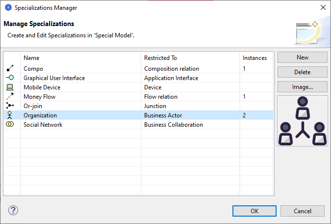

The Specializations Manager allows you to create, modify and delete specializations of ArchiMate concepts.
The ArchiMate specification describes the use of specialization of elements and relationships:
"Specialization is a simple and powerful way to define new elements or relationships based on the existing ones. Specialized elements inherit the properties of their generalized elements... Also, new graphical notation could be introduced for a specialized concept, but preferably with a resemblance to the notation of the generalized concept; e.g., by adding an icon or other graphical marker, or changing the existing icon. A specialized element or relationship strongly resembles a stereotype as it is used in UML. The stereotype notation with angled brackets may also be used to denote a specialized concept."
For more information see Language Customization Mechanisms.
The Specializations Manager is available from the main "Tools" menu and by clicking the "..." button to the right of an object's Specialization in the Properties Window.
The Specializations Manager
To create a new specialization, click the "New" button or double-click in the table. Provide a name and select the concept type that the specialization will be restricted to. Note that you cannot have more than one specialization with the same name and concept type. If the specialization is used in a model, the number of instances is displayed in the "Instances" column.
To delete one or more specializations, select them in the table and press the "Delete" button. Any concepts that reference the deleted specialization will no longer reference it.
Element specializations (except Junction) can also be associated with an image which will be displayed when the specialization Element is used in a View. Select an image for the object or clear the image from the "Image..." button or by double-clicking in the image preview box. See "Adding Images to Objects" for more details.
A Specialization can be applied to a concept by selecting it in its Properties Window.